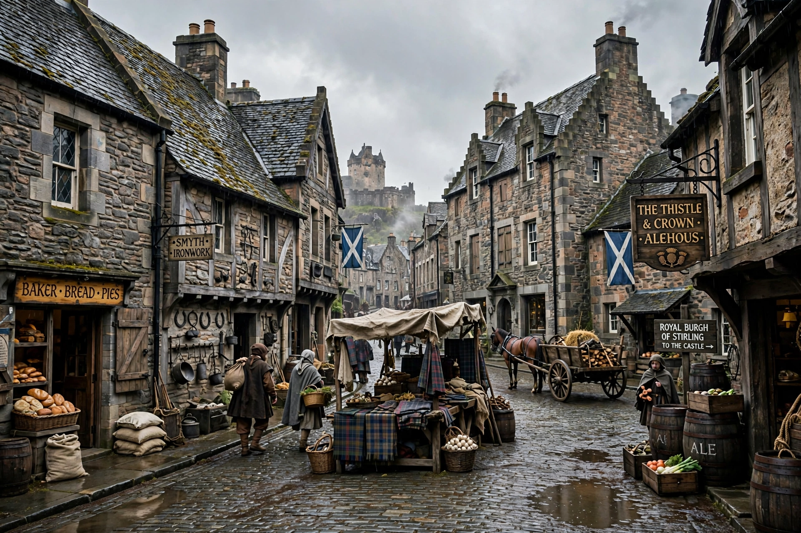

Robert Henryson

| Robert Henryson | |
|---|---|
| Born | c. 1425 |
| Died | c. 1500, Dunfermline, Scotland |
| Occupation | Poet, schoolmaster, notary |
| Language | Middle Scots |
| Notable works | The Testament of Cresseid; Morall Fabillis |
Robert Henryson (c. 1425 – c. 1500) was a Scottish poet and one of the great makars of the Scots Renaissance. Almost nothing certain is known of his life; he is thought to have been a schoolmaster at the abbey school of Dunfermline and a notary public, and he may have studied at the University of Glasgow.
Works
Henryson's surviving works comprise three long poems. The Morall Fabillis of Esope the Phrygian is a cycle of thirteen beast fables in rhyme royal, adaptations of Aesop expanded with rich social satire and moral reflection, including "The Cock and the Jasp" and "The Lion and the Mouse." The Testament of Cresseid, his masterpiece, continues Chaucer's Troilus and Criseyde, telling how Cresseid, abandoned and leprous, curses the gods, recants, and dies after a final recognition scene with Troilus — a poem admired for its winter opening and moral gravity. Orpheus and Eurydice retells the classical myth with allegorical commentary. A number of shorter poems are also attributed to him.
Style and reputation
Henryson blends high moral seriousness with humour, vivid Scots diction, and compassion for the poor and oppressed. William Dunbar listed him among the dead makars in his Lament for the Makaris. Seamus Heaney translated The Testament of Cresseid and the fables, renewing modern interest in his work.